Свято-Троицкий мужской монастырь — это не просто архитектурный ансамбль, а живая история освоения Сибири. Расположенный в самом сердце Тюмени, монастырь вот уже более четырёх столетий хранит духовные традиции православия и служит свидетельством глубокой веры первых поселенцев зауральских земель.
Основанный иноком Нифонтом из Казанской Раифской пустыни, монастырь стал первым каменным строением в Сибири и важным миссионерским центром, откуда православная вера распространялась по бескрайним просторам Зауралья.
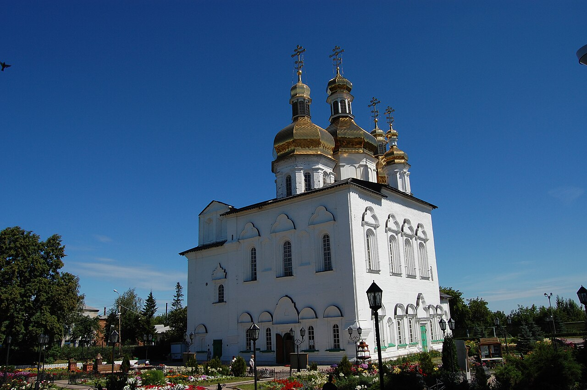
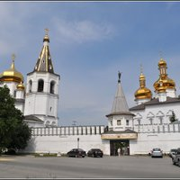
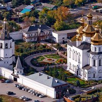
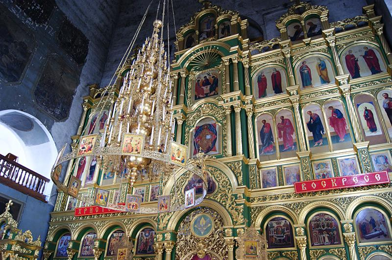
История Свято-Троицкого монастыря начинается в начале XVII века, когда монах Нифонт из Казанской Раифской пустыни, долго странствовавший по уральским и зауральским землям, основал на высоком берегу реки Туры Преображенский монастырь, позже переименованный в Свято-Троицкий.
Уже в первые десятилетия существования здесь были построены деревянные церкви, кельи для братии и хозяйственные постройки. Монастырь быстро стал важным духовным центром, привлекая паломников и способствуя распространению православия среди местного населения.
Начало XVIII века стало переломным моментом в истории обители. По благословению святителя Филофея, первого митрополита Сибирского, началось масштабное каменное строительство. Несмотря на царский запрет на каменное строительство в регионах, монастырь получил особое разрешение, что свидетельствует о его значимости.
В период активной реконструкции под руководством митрополита Филофея монастырь приобрёл свой уникальный облик в стиле сибирского барокко, соединившего традиции украинского зодчества и местные архитектурные особенности. Именно тогда были возведены величественный Троицкий собор и изящная колокольня, которые и сегодня определяют силуэт монастырского комплекса.
На протяжении всего XVIII века монастырь продолжал развиваться как духовный и просветительский центр. При обители была открыта первая школа в Тюмени, что подчёркивает важную роль монастыря в образовании и культуре региона.
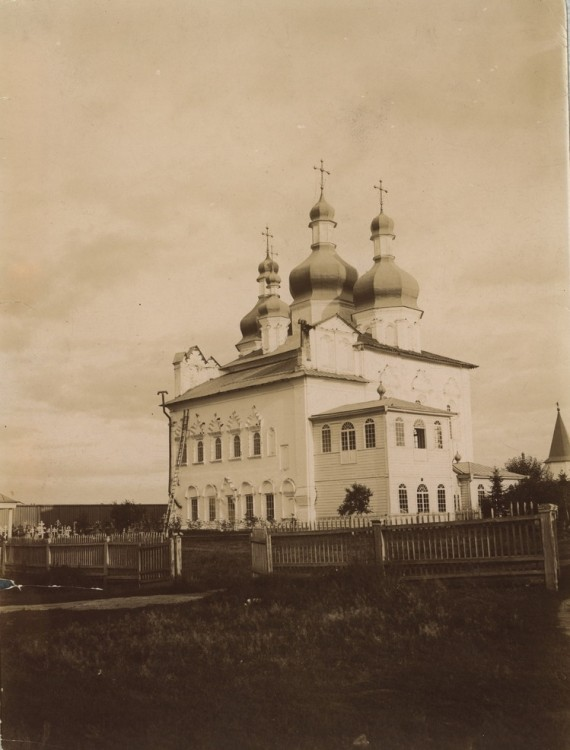
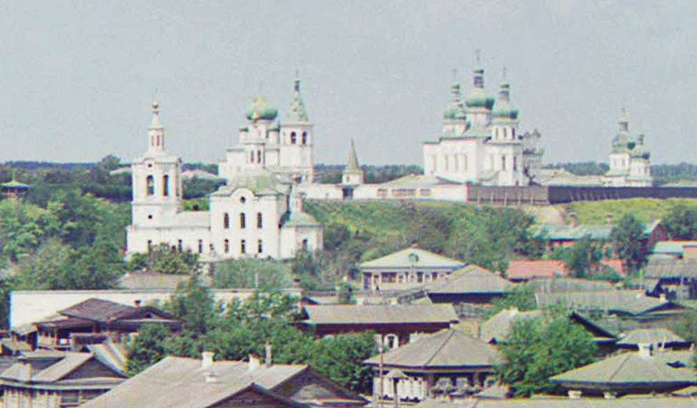
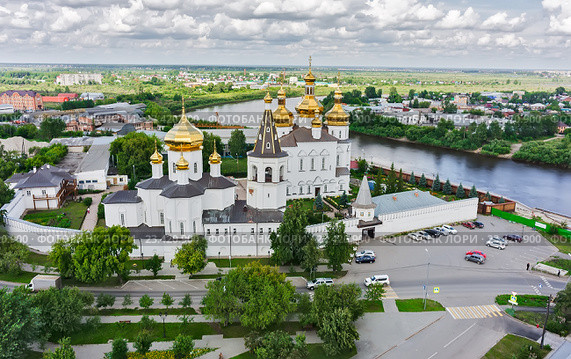
XIX век стал периодом расцвета монастыря. Обитель превратилась в важнейший духовный и культурный центр Сибири, куда стекались паломники со всех концов России. Монастырь процветал, привлекая новых насельников и расширяя свою хозяйственную деятельность.
Однако с приходом к власти большевиков началась чёрная полоса в истории обители. Гонения на церковь привели к тому, что монастырь был официально упразднён и закрыт. Братия была распущена, богослужения прекращены, а многие здания перестроены под хозяйственные нужды или разрушены.
Несмотря на тяжёлые испытания, монастырский комплекс сохранился и в середине XX века был взят под государственную охрану как памятник архитектуры федерального значения. Это позволило сохранить уникальные архитектурные памятники для будущих поколений.
Возрождение монастыря началось в середине 1990-х годов, когда обитель была возвращена Русской Православной Церкви. С этого момента началась масштабная реставрация и духовное возрождение монастыря. Были восстановлены храмы, колокольня, монастырские стены. Сегодня Свято-Троицкий монастырь вновь действует как мужская обитель, принимая паломников и продолжая свою многовековую миссию.
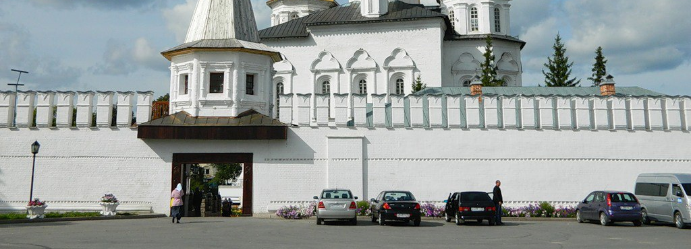
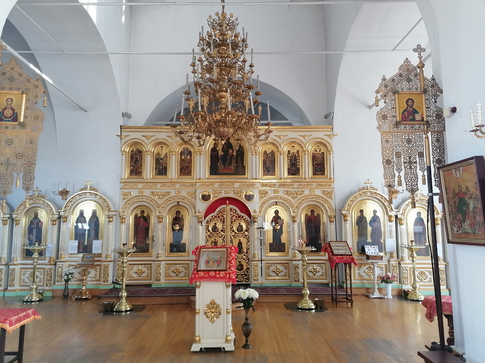
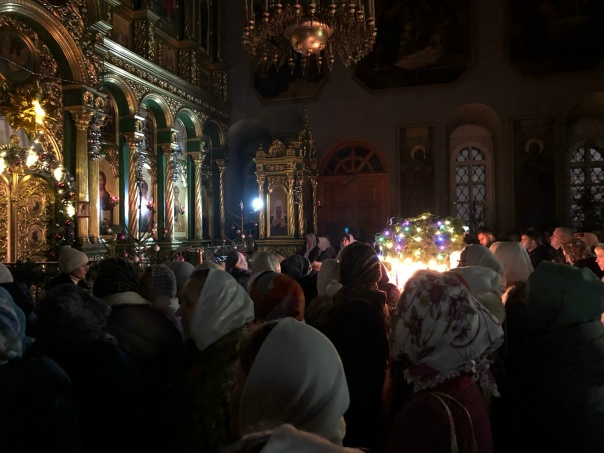
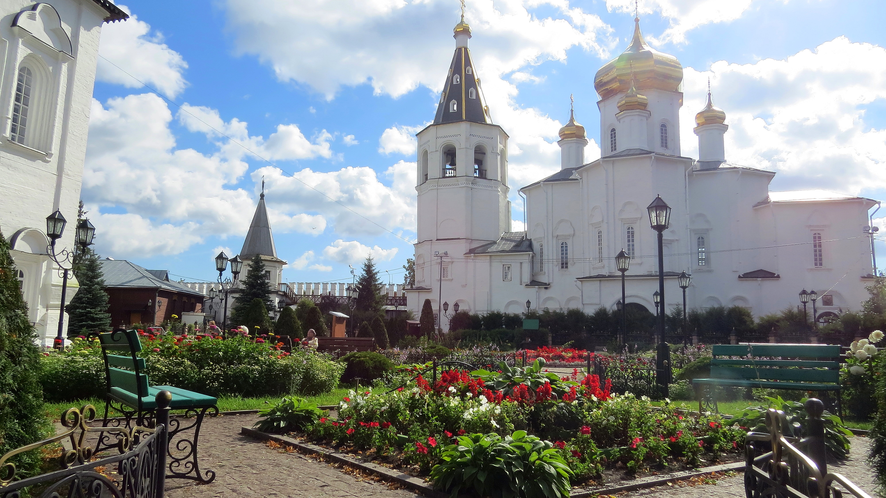
Место силы и духовности
в сердце древней Тюмени